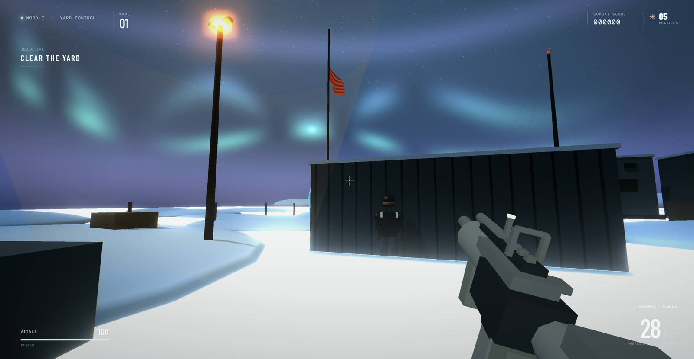

Run archive
8 local executions and 3 cloud baselines, newest first. Open a run for its configuration, recorded checks and measurements.
-

Codex completed a Digger 3D browser game build. The retained session notes report 28/28 simulation self-tests passing and a small interactive smoke check; manual acceptance remained partial.
-

Codex completed the one-shot task and produced a static Whiteout Protocol browser FPS build. No independent gameplay acceptance score is assigned.
-

Codex completed the one-shot task and produced a static one-inning 3D arcade baseball build. No independent gameplay test report was retained with the turn metrics.
-

Completed a three-inning 3D arcade baseball game with batting, pitching, fielding, scoring, and restart behavior. The visual presentation is acceptable, but gameplay does not consistently follow baseball rules.
-

Completed a deterministic Digger game with grid simulation and isometric Three.js presentation.
-
Inference suite
Latency · decode · cache
4K / 16K / 64K context
The 4K and 16K measurements completed; the 64K cold prefill was rejected by memory admission.
-
Inference suite
Latency · decode · cache
4K / 16K / 64K context
Completed the benchmark-only run across all three context rungs.
-

Completed a playable arcade Digger game and reported end-to-end verification.
-

Completed a separate Whiteout Protocol implementation and build with TensorFold.
-

Completed the Whiteout Protocol browser FPS challenge; the archived JavaScript and CSS match this run's build.
-

Completed the voxel garden challenge and produced a single-file HTML artifact.